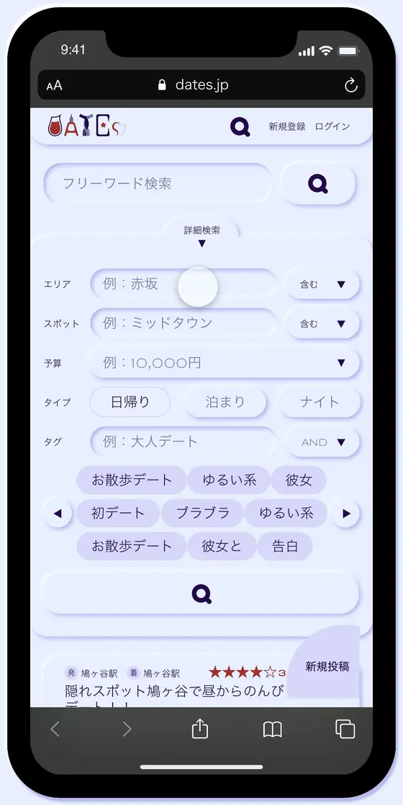
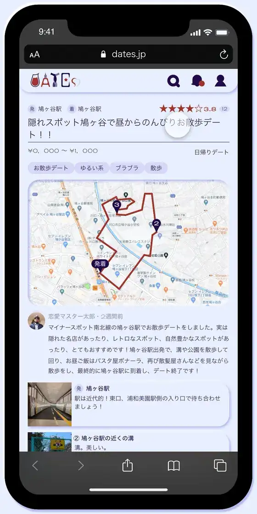
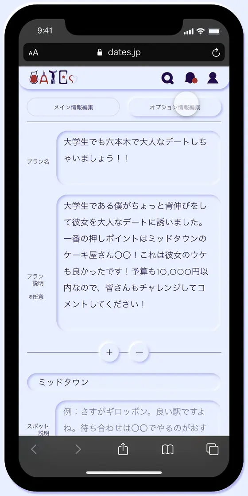

藤井 洵斗 - Fujii Shunto
1995年生まれ。新卒で通信事業社に入社し、M&Aや戦略策定に従事。その傍らで、外資IT企業などでデザイナーとして事業参画。2019年、同僚であった小泉と本プロジェクトを始動、複数回のピボットの末、デートプラン投稿・評価サイト「DATEs」をリリース。
様々なデートプランを調べること、プランについてコメントすること、また自らが投稿することが可能なUGC型プラットフォームサイトとなっております。

エリア、スポット、予算、タイプ（1日、お泊り、夜、昼）、さまざまなタグ（「お散歩デート」「初デート」など）から検索することができます。

地図情報やスポットの写真、スポットごとの説明などの基本情報に加え、評価機能を使うことで投稿者また他のレビュワーからデートの極意を聞くことができます。

投稿することで同じデートを体験した方からの評価や、そのエリアに詳しい方から近隣のおすすめスポットを聞けたり、様々な恩恵が得られます。
1995年生まれ。新卒で通信事業社に入社し、M&Aや戦略策定に従事。その傍らで、外資IT企業などでデザイナーとして事業参画。2019年、同僚であった小泉と本プロジェクトを始動、複数回のピボットの末、デートプラン投稿・評価サイト「DATEs」をリリース。
1992年生まれ。通信事業社にオウンドメディアのPdMとして新卒入社。2021年に退職後、人材系会社にてUXデザイナーとしてプロダクトエンハンスを担当。サービス全体設計とフロントエンド開発担当としてDATEsリリースに携わる。
1993年生まれ。Web企業にデータエンジニアとして新卒入社。現在は同企業の研究所にてエンジニアとして、機械学習（画像、言語、コンテキストアウェアコンピューティング）、HCI分野での研究活動や、それを活用した新規サービスの立ち上げ業務を行っている。DATEsの開発全般に携わる。
1996年生まれ。2018年に新卒で通信系販売代理店に入社し、経理を担当。2020年に退職後、出版社にて経理担当として子会社の決算全般を担当。2022年に退職後、外資系ITベンダーにて主に顧客の技術的な相談窓口として活動している。DATEsの広報に携わる。
DATEs（デイツ）は、付き合う前の初デートからお泊りデートまで、デートプランをみんなで投稿・評価できるサイトです。キャッチコピーは「あなたの知らないデートプランに出会える」。サービス本体は https://dates.jp/ です。
デートプランの閲覧・検索はログインなしでも利用できます。プランの投稿などには会員登録が必要で、 新規会員登録は無料 です。DATEs IDでの登録のほか、LINEでのログインにも対応しています。
トップの「デートプランを探す」から、場所・予算・タイプ（1日／お泊り／夜／昼）・タグ（お散歩デート、初デート、ゆるい系など）で絞り込めます。「エリアから探す」では、北海道から九州まで地域別にも探せます。
発着スポット、プランの流れ、スポットごとの説明、予算帯、タイプ（例：夜デート）、星評価、他ユーザーのコメント、タグなどが載っています。実際の例は dates.jpのおすすめプラン から確認できます。
無料の会員登録（またはLINEログイン）後、「プラン投稿」から投稿できます。投稿画面はログインが必要です。スポットを順に組み、説明や予算・タイプ・タグを付けて公開できます。
はい。会員はデートプランに評価やコメントを残せます。投稿者や他のレビュワーのコメントから、実際のデートのポイントを参考にできます。
https://dates.jp/ はデートプランの検索・投稿・評価を行うサービス本体です。本サイトは、DATEsプロジェクトのサービス概要、沿革、メンバー、ポリシー、お問い合わせを掲載する公式コーポレートサイトです。
2023年1月25日、DATEsは埼玉県秩父郡横瀬町の官民連携プラットフォーム「よこらぼ」に採択されました。デートによる地方の観光人口増加などに取り組んでおり、横瀬町関連のプランもdates.jp上で公開されています。詳細は こちらのお知らせ をご覧ください。
事業連携、インターン等のお問い合わせは customer@dates.jp までご連絡ください。
DATEsのポリシーをご案内いたします。
利用規約 ・
プライバシーポリシー
事業連携、インターン等のお問い合わせは以下までお願いいたします。